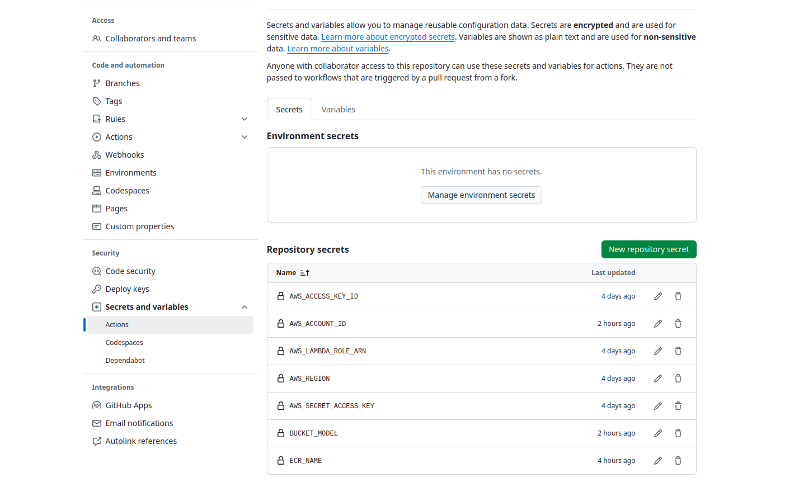

Startup
This tutorial is necessary to startup the project. Here you will be able to create the S3 buckets that will be used to store data and the model file in the ONNX format.
Install all the requirements with:
pip install -r requirements.txt
Ensure Python version 3.12 is being used
WARNING
If you would like to run with GPU, download CUDA Toolkit 12.6 https://developer.nvidia.com/cuda-downloads
Create .env file in the root of the repository
ROBOFLOW_API_KEY=""
AWS_ACCESS_KEY_ID=""
AWS_SECRET_ACCESS_KEY=""
AWS_REGION=""
AWS_LAMBDA_ROLE_ARN=""
Create a S3 bucket one bucket to store the ONNX model and another one to store all the datasets from the data versioning
python3 data/s3_bucket.py --bucket_model bucket-model-name --bucket_dataset bucket-dataset-name
This command will automatically save the bucket name in the .env file:
BUCKET_MODEL="bucket-model-name"
BUCKET_DATASET="bucket-dataset-name"
Add the following variables in the “Actions secrets and variables” section at settings

INFO
ECR_NAME is the name of the ECR container.
BUCKET_MODEL is the name of the bucket were the model is stored.